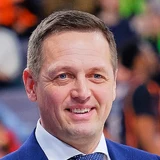

Slovenian NT head coach Aleksander Sekulic said, via Siol.net.
“Nobody knows what will happen until then, so we have to adapt on the go. If we lived in worry, then we wouldn't be able to work normally.”

3 quotes from Aleksander Sekulic about 1 other person around the NBA, newest first. Each one links to its original source.
Slovenian NT head coach Aleksander Sekulic said, via Siol.net.
“Nobody knows what will happen until then, so we have to adapt on the go. If we lived in worry, then we wouldn't be able to work normally.”
Callie Caplan:Slovenia coach Aleksander Sekulic on Luka Doncic grabbing his right wrist in second half today:
“I don’t think it’s that big.… It’s nothing he mentioned to me that’s bothering him, so I don’t know.”
Ben Golliver:Slovenia coach Aleksander Sekulic on Luka Doncic after advancing to Olympic semifinals:
“When you have Luka, everything is easy. He’s not coming here to show off. He’s coming here to help the team and have fun. … I have an easy job. I just need to put him on the court.”